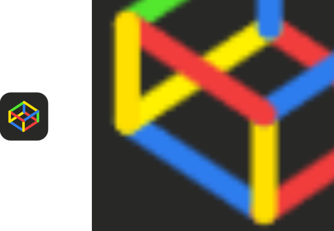
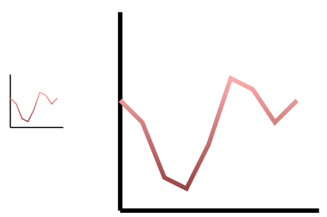
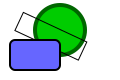

PYWS - Mastering two Dimensions - Drawing with SVG and Python¶
Day eight - June, 14
Introduction¶
Someone (I could not find the original quote) said:
“Who only can write computer programs, can’t even this”
When writing any non-trivial program, there are always some interfaces with and models of the real world. To be successful, there is a lot of domain specific knowledge required, which makes a good programmer also kind of an expert in a number of other areas (math, physics, finance, administration, ...).
As this workshop happens to happen in the Fablab, we should try to really make something. My favourite machine in the Fablab is the laser cutter. We might try to create some pice of abstract art out of coloured paper. But before we can start, there is a number of things to learn from outside of the Python universe.
Disclaimer: The following description talks about XML and SVG, but it covers only the very basics, hardly scratching the surface.
The laser cutter is a machine, which is controlled by some software (e.g Adobe Illustrator). The software takes a design and translates it into signals, which control the movements of the laser head and the intensity of the laser beam. The design is a set of lines in a two-dimensional area, which correspond to the path for the laser head movement. The color of the lines controls the speed and intensity of the laser beam.
One way to create a two-dimensional design is a markup language called Scalable Vector Graphics or SVG. The Adobe Illustrator (AI) can import SVG designs and send them to the laser cutter. If the SVG is prepared well, there is no extra processing required at the AI side.
Scalable Vector Graphics¶
Like modern HTML, SVG belongs to the family of Extensible Markup Languages. XML is actually the basis of many different description languages, giving them a common syntax and a number of useful processing tools. First we need some basics about the Extensible Markup Languages:
XML¶
Whoever has seen HTML text, which is the languange to describe Web content, has actually seen an example of XML code. Modern browsers are very tolerant about the format of web pages. But at least for the latest version of HTML which is HTML5, the XML conformity is required. Modern html pages start like this:
<html xmlns="http://www.w3.org/1999/xhtml">
which indicates, that the following text should be interpreted as an XML-dialect, which is HTML. The xmlns parameter looks like an internet link, and the page is actually reachable. But the page found there has no special meaning. It is just by convention, that everyone, who creates an XML-dialect uses a web url (which he owns!) to introduce a unique name for the elements. All names inside the html document belong to the XHTML namespace. The same name can appear within another namespace and have a completely different meaning. As long as the namespaces are introduced correctly, the names of different namespaces may even be mixed.
XML - Syntax¶
The following examples use HTML names, but the rules apply to all other xml dialects (including SVG). Talking about html often refers to pages, but the more general term for XML is documents.
XML names are case-sensitive! A name surrounded by < and > is called a tag.
<html> <head> <title>
The above tags are actually starting tags, each of which requires a closing tag:
<html> <head> <title> </title> </head> </html>
Start- and end- tags may not overlap, a tag starting inside another tag must be closed inside the same tag.
The HTML(=XML) document may start with a prolog line. If it is there, it must be the first line of the document:
<?xml version="1.0" encoding="UTF-8"?>
The default encoding of an xml document is utf-8. If the encoding is different, the it must be specified correctly in the prolog line.
The first tag in the document is a root tag and it may occur only once. So <html> ... </html> always includes the entire document.
Whitespace between tags usually has no meaning. Text between tags is considered as content. The <title> tag may contain some text, which is considered a title and which is rendered in some meaningful way:
<title>Tutorial of the SVG Language</title>
The browsers usually display the title text in the upper bar of the browser window. But this is part of the implementation of the html viewer.
The term rendering in general means transforming the html-text into some visible form. We will see this in more detail soon.
Some tags may or may not enclose content or other tags. Instead of writing a starting tag followed by a closing tag, we can use a single self-closing tag:
<br /> <!-- a line break -->
<hr /> <!-- a horizontal rule -->
The above example also shows, how to embed a comment into the html (=xml) text. No doube dash -- is allowed inside the comment text.
Tags can have attributes instead or additional to some content:
<a href="http://tutorials.jenkov.com/svg/index.html">SVG Tutorial</a>
The values of attributes must be enclosed in double quotes ", even for numerical values.
As XML uses some characters to identify the markup-syntax, these characters can not appear in the content of the data. Therefore some characters are substituted by entity references:
< < less than
> > greater than
& & ampersand
' ' apostrophe
" " quotation mark
XML - Complete Example¶
The next block of xml code ist just to illustrate most of the above rules:
<messages>
<!-- a sequence of messages -->
<note id="501">
<date year="2016" month="may" day="05" />
<to>Tove</to>
<from>Jani</from>
<heading>Reminder of <xml></heading>
</note>
<note id="502">
<date year="2016" month="may" day="06" />
<to>Jani</to>
<from>Tove</from>
<heading>Re: Reminder of <xml></heading>
</note>
</messages>
About Authoring tools¶
Both HTML and SVG documents consist of pure text. This is, what gives the author 100% accuracy and allows programming language to deal with it. For both HTML and SVG there exist specialized applications, which allow to create the documents on a graphical user interface. These applications try to make life easier for the user by hiding the nasty details of the problem to solve. But things, which are hidden, are not visible. To learn about invisible facts is rather about guessing. As a german proverb (of the funny type) says:
Wissen ist Macht! Nicht wissen macht auch nichts.
Which can be only poorly translated as: Knowledge is power, not knowing doesn’t matter. This is of course not an option for a programmer. We want to know! Therefore we love to dive into the nasty details of something like SVG.
The above does not negate the value of smart tools, they can be very helpful and empowering. When confronted with many problems at the same time, programmers may be very happy to concentrate on a few, while being shielded from most of other problems
About Rendering¶
Markup languages are there to determine the meaning of some data and to determine how the data should be presented to the world. In the case of HTML these two forms of markup lead to language elements that are rather descriptive and others, which are rather declarative. Descriptive elements agree on how data elements should be displayed, while declarative (=semantic) elements rather define the meaning of some data element.
Now HTML5 (as a dialect of XML) gives a clear preferrence to the semantic (meaning and relation of data elements). The visual part is determined by a separate style language: the CascadingStyleSheets CSS.
As HTML5 and CSS are now standardized to a great extent, all browsers should present a given HTML document in the same way. But it took a long way to reach this point. The process of generating a visible represention of a textual document is called Rendering. The rendering enginges in modern browser are really smart pieces of software. First a markup like HTML and CSS is really complex, second there are still older documents in the web, which dont follow the rules, but still should be displayed nicely and third there are different forms of output devices. Rendering onto a 24 inch high resolution screen is different from a smartphone display and also different from a printed page or a Braille display device.
For SVG the developement process was always tightly coupled with the standardization process. There is little room for disagreement, how the text of an SVG document is to be interpreted. Much of the rendering process of an SVG document involves a lot(!) of math and is far from easy. It took quite some time, until there were reasonable software packages available, which could display an SVG document correctly. In the beginning there was Adobe, which offered a browser plugin to show SVG graphics. Later there was a free software called InkScape, which is also an SVG authoring tool. InkScape is until today a good choice, when an SVG graphic has to be transformed into a raster image format (like JPG or PNG)
But now we are lucky, as every up-to-date browser can render SVG images and allows a smooth integration of HTML and SVG.
Rendering of SVG in the Browser¶
A browser can directly open an SVG image, just by specifying the URL of an SVG document. This displays just the graphic, nothing else. The feature can easily be used by dragging an SVG document into an open browser window. With [ctrl]+r the browser window can be refreshed, allowing for a fast cycle between editing the SVG document and seeing the result almost immediately.
A browser can include an SVG docment as an <img> element:
<img src="/svg/circle-element-1.svg">
The browser treats this type of embedded image like all other images. It can be zoomed in an out and be saved as an image on some local drive, but, interestingly, what is saved is just the SVG document text.
Finally it is possible to integrate the text of a n SVG document directly into HTML. This is a powerful combination:
- SVG can share styles of the HTML CSS environment
- Elements of the SVG are part of the HTML DOM tree and can be modified dynamically by scripting
- Elements of SVG can be defined as triggers of events, like links and buttons
SVG - Scalable Vector Graphics¶
SVG defines images that consist of vectors and which can be scaled. This is different from raster images, which consist of pixels and can be scaled only with some loss of qualtiy.
Photos are always raster images! Business charts are better created as vector graphics.
To show the effect of scaling on both, raster images and vector images, here just two examples:
 As mentioned before, this document will only show the very basics of the SVG language. There are many introductions and tutorials for SVG on the web. What I consider to be the best is form Jakob Jenkov, who has many brilliant tutorials on his web site. I highly recommend his Tutorial on SVG: http://tutorials.jenkov.com/svg/index.html
For now just look at the examples page to get an impression about what is possible with a few SCG statements: http://tutorials.jenkov.com/svg/svg-examples.html
The first SVG Image¶
What we learned about XML applies directly to SVG:
<svg version="1.1"
xmlns="http://www.w3.org/2000/svg"
width="120mm" height="80mm"
viewBox="0 0 120 80" preserveAspectRatio="none">
<circle cx="60" cy="40" r="30"
style="stroke-width:3; stroke:#008800; fill:#00dd00" />
</svg>
Type this into an editor (or copy it), save it as first_svg.svg and open it in your browser (or drag’n’drop it into an open browser window). This is, what you get:
The <svg> tag¶
All svg attributes are optional, but the format above is recommended, because this gives us predictable results for all the different ways of rendering an SVG image in the browser.
The name space attribute xmlns sets the default name space for all tags that are bewlow (=included in) the <svg> tag. The width and height attributes have pixels (px) as default units. Other units as centimeters (cm) or inches (in) are possible. The viewBox and preserveAspectRatio atributes are discussed soon.
One of many shapes: the <circle> tag¶
A circle is defined by its center coordinates cx and cy and by its radius r. The appearance of the circle is defined by a style. The style attribute is a string, which contains style elements. These are however specified in a CSS-like syntax.
A second SVG example¶
This SVG document:
<svg version="1.1"
xmlns="http://www.w3.org/2000/svg"
width="120mm" height="80mm" viewBox="0 0 120 80" preserveAspectRatio="none">
<circle cx="60" cy="30" r="25"
style="stroke-width:4; stroke:#006600; fill:#00cc00" />
<rect x="25" y="15" width="70" height="20" transform="rotate(25 30 10)"
style="stroke: #000000; stroke-width: 1; fill:none"/>
<rect x="10" y="40" width="50" height="30" rx="5" ry="5"
style="stroke: #000000; stroke-width:2; fill: #6666ff"/>
</svg>
is rendered like this:
As we can see, the sequence of elements in the documents matters: the later elements are drawn just on top of the previous.
The position of a rectangle is defined by its upper left corner. The rounded corners are specified by the radius specifications rx and ry. The second rectangle has no filling, which means it is complete transparent. Fill can be specified as none, but the default fill color is black (#ffffff)
The rotation is one of the transformation operations, and is specified as text in the transform attribute string. The first rotation argument is an angle in degrees in clockwise direction. The second and third argument is the coordinates (x,y) of the rotation point. These coordinates are absolute, not relative to the shape itself. Forgetting about this fact can result in disappeared shapes, just because they are rotated out of the visible area. Visible area? That leads us to a very important subject
Coordinates, the Canvas and the ViewBox¶
The mathematical coordinate system is infinite. Even the space given by limited size of numbers inside the computer is huge beyond imagination. The (two-dimensional) coordinate has an X-axis and a Y-axis, The vertical Y-Axis crosses the horizontal X-axis forming a 90 degree angle. The point where they cross has the coordinate (0,0)
Be aware, that the Y-axis is different from the standard mathematical model: negative Y values go up, positive values go down. We can draw at any coordiantes, and SVG will place our shapes accordingly. The rendering will happen only for some visible partof the canvas.
What we will see is defined by the viewBox attribute of the <svg> tag:
viewBox="-20 50 300 200"
This defines the upper left corner of the final image is at x=-20, y=+50 of the canvas. from this point the image extends 300 units to the right and 200 units down. The lower right corner of the final image is at the canvas coordinates x=280, y=250.
This image is rendered into the space, which is specified by the width and height attributes of the <svg> tag. The width and height values can be specified with a real world scale like millimeters or inches. Which makes sense, if the final rendering of the design ends on a plotter, printer or laser cutter.
Any other values should be considered as just units of distances and coordinates on the SVG canvas. If we want to work with real scales in our drawings, then we must make sure, that the viewBox dimension matches the width and size dimensions. So if we specify:
width="30cm" height="20cm" viewBox="-20 50 300 200"
all units in our drawing are actually millimeters.